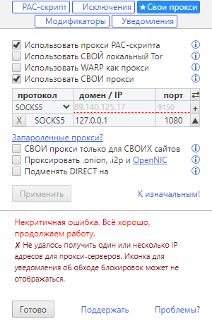
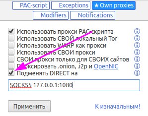

| Ник |
Пост |
Дата |
| 404kg(Max) | Правилами SS установлено проксировать весь трафик > тогда в браузере не подгружается PAC скрипт. Обновление висит. Сайты грузятся.
Если правилами SS установить проксировать только определённые сайты > тогда PAC скрипт получается подгрузить, НО сайты не грузятся.
Какие настройки надо сделать/изменить в расширении или в конфиге SS клиентском?
Не могу понять логику работы этих двух инструментов.
Браузер обращается к ip SS, тот отсылает запросы к серверу, сервер запрашивает сайт и отдаёт ответ?
Как сюда вклинивается то расширение? Надо настроить расширение на работу ip:port SS чтобы сайты стали грузиться? | 2023-05-06T17:15:04.776Z |
| ilyaigpetrov(ilyaigpetrov) | Речь о расширении “Обход блокировок Рунета”? Там при добавлении прокси нужно указать его тип.
Shadowsocks is not a proxy on its own, but (typically) is the client software to help connect to a third-party SOCKS5 proxy, which is similar to a Secure Shell (SSH) tunnel
Т.е. нужно добавлять third-party proxy server типа SOCKS5. Вы верно выбираете тип и адрес? | 2023-05-06T17:37:28.964Z |
| kstrmv | Я использую SwitchyOmega для обращения к локальному SS-клиенту, который в свою очередь обращается к SS-серверу на ВПС | 2023-05-08T03:16:22.714Z |
| 404kg(Max) | Да.
Не работает ничего у меня

запуск браузера идёт с параметрами
chrome.exe" --proxy-server="socks5://127.0.0.1:1080" --host-resolver-rules="MAP * 0.0.0.0 , EXCLUDE 127.0.0.1"
конфиг ACL
[bypass_all]
[proxy_list]
habr.com
mail.ru
| 2023-05-14T08:59:10.708Z |
| ilyaigpetrov(ilyaigpetrov) | Одновременно --proxy-server=“socks5://127.0.0.1:1080” и расширение не будут работать.
Вы этот флаг опускаете при использовании расширения? | 2023-05-14T11:36:57.000Z |
| 404kg(Max) | Нет конечно! Как мне сайты тогда посещать?
А как тогда быть? Похоже придётся отдельный браузер заводить=(
Мне надо чтобы определённые сайты проксировались через SS и параллельно был доступ к заблокированным сайтам РКН.
Мой браузер сейчас чётко настроен на доступ к проксируемым сайтам. | 2023-05-14T17:44:12.579Z |
| ilyaigpetrov(ilyaigpetrov) | Можно настроить так:
- Для обхода блокировок РКН использовать добавленный в расширение прокси.
- Для всех остальных сайтов использовать SS. См. “Подменять DIRECT на”.
 | 2023-05-14T18:00:15.230Z |
| 404kg(Max) | Супер!
Вот так работает. | 2023-05-15T07:14:39.942Z |
| 0ka(0ka) | поле не сохраняет значение если убрать и поставить галку, можете добавить сохранение? | 2023-05-15T07:29:32.305Z |
| ilyaigpetrov(ilyaigpetrov) | Свои прокси сохраняют значение даже после их отключения и обратного включения.
Как оказалось, реализовано это в интерфейсе popup-страницы (опции).
Всё, что касакется продолжения разработки этой страницы, неимоверно сложно из-за изначально неидеального кода, да ещё и его реализации на устаревших библиотеках (inferno).
Я считаю, что задача переписывания части расширения и popup-страницы с нуля, чтобы избавиться от технического долга (technical debt) и перевести расширение на MV3, приоритетней, чем задача втискивания очередного костыля в устаревший код.
Так что запрошенная вами функциональность появится не скоро (в течение нескольких месяцев в лучшем случае). | 2023-05-17T23:56:25.327Z |
| 404kg(Max) | Ещё момент.
А как себя поведёт браузер если ресурс который мне надо проксировать через SS окажется в списках РКН и соответственно будет включён в pac-скрипт. Не будет ли здесь конфликта? И чему будет отдаваться приоритет: прокси pac-скрипта или SS при загрузке сайта? | 2023-05-24T14:12:11.518Z |
| ilyaigpetrov(ilyaigpetrov) |
И чему будет отдаваться приоритет: прокси pac-скрипта или SS при загрузке сайта?
Приоритет будет отдаваться прокси PAC-скрипта. Во вкладке “Исключения” можно удалить сайт из проксируемых, тогда для него будет использоваться SS. | 2023-05-29T16:09:31.313Z |
| 404kg(Max) | Супер!
А можно ли параллельно подключить Tor и использовать его только для .onion адресов? Сейчас у меня он запущен в консоли через Tor Bundle (tor.exe). | 2023-06-11T23:24:18.562Z |
| ilyaigpetrov(ilyaigpetrov) | К сожалению, нельзя: в текущей версии есть только три “раковины / sinks” для каждого запроса:
- DIRECT или его подмена.
- Прокси PAC-скрипта.
- Свои прокси.
.onion считается исключением из стандартной обработки PAC-скриптом и, как все остальные исключения в проксируемые, перенаправляет запрос в раковину своих прокси (3). Свои прокси, у вас, вроде, уже используются для обхода блокировок РКН и добавление к ним проксей Тора приведёт к тому, что Тор будет применяться не тлько для .onion, но и для обхода блокировок РКН.
| 2023-06-12T00:12:45.508Z |